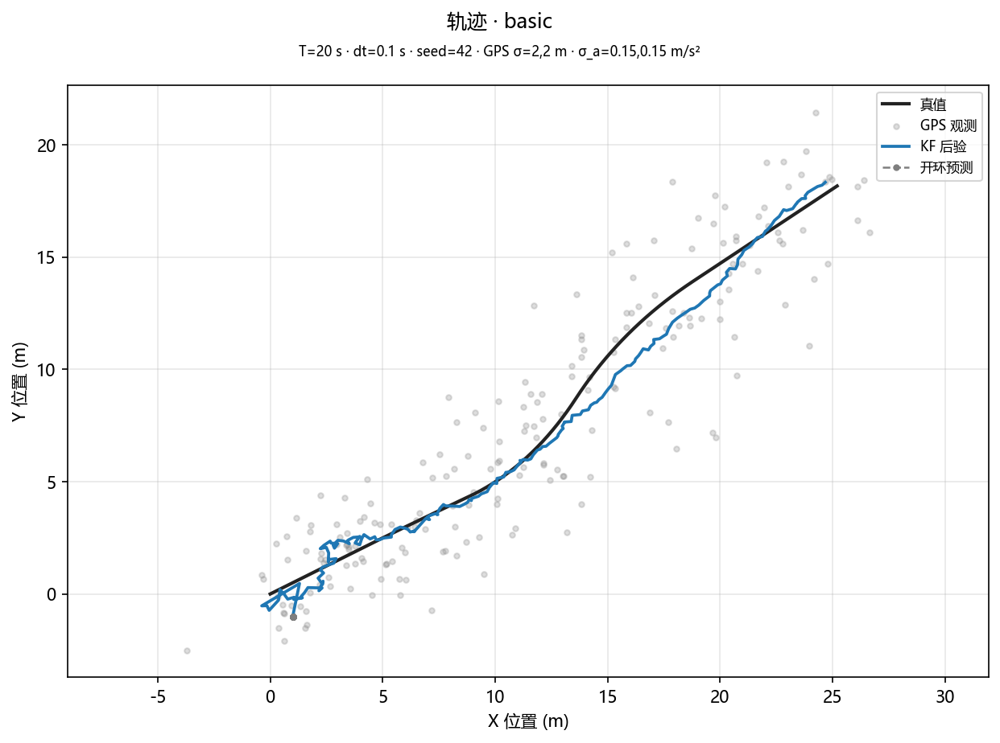

Tech Lab
技术探索
用仿真、代码和可复现实验理解机器人、AI 与数学问题。
个人研究与创作
以六周专题探索技术、视觉表达与 AI 协作，把研究整理成可运行、可复核的作品。
首个作品 · EKF Interactive Lab
用交互实验学习 KF、EKF 与简化二维 IMU/GPS 融合。

Tech Lab
用仿真、代码和可复现实验理解机器人、AI 与数学问题。
Creative Lab
用交互、图解和动画呈现研究过程与技术结果。
Agent Lab
用工具调用和工作流辅助资料整理、检查和交接。
图表来自 V0.1 的二维合成预设。打开原图可查看坐标轴和图例。
